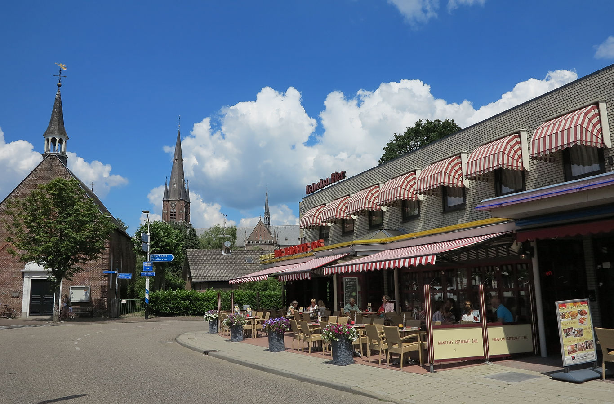
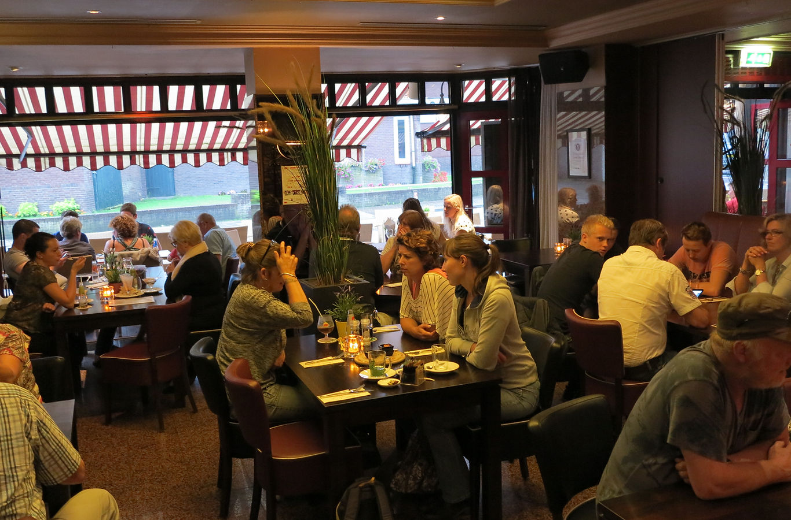
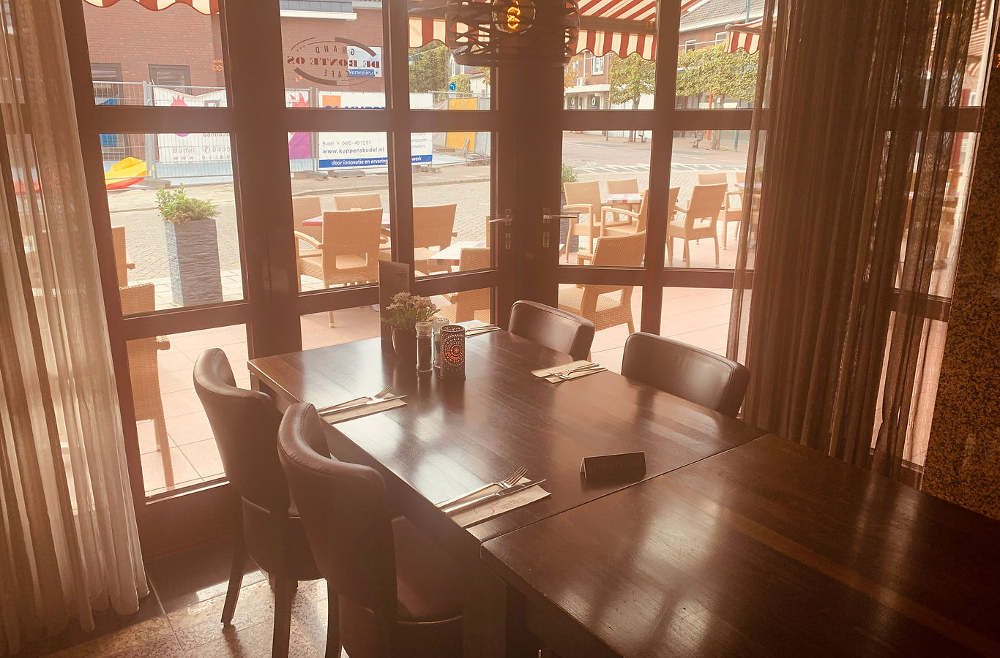

Eten
Voor een goede lunch, een lekkere hap of een uitgebreid diner: u bent bij ons aan het juiste adres. Ook voor gezelschappen en voor de kleintjes.
Naar de kaart
Eetcafé, terras en feestzalen in het centrum van Budel
Lekker uit eten, gezellig borrelen & fantastisch feesten! Ons terras en eetcafé zijn open voor koffie, lunch, diner en borrel.
Heerlijk uit eten, gezellig een drankje of een goed verzorgd feest. In ons eetcafé kunt u terecht voor onder andere een lekkere lunch, verse koffie, diner, verrassende (tap)bieren, samen borrelen of een fantastisch feest. U bent bij De Bonte Os op het juiste adres!
Voor een goede lunch, een lekkere hap of een uitgebreid diner: u bent bij ons aan het juiste adres. Ook voor gezelschappen en voor de kleintjes.
Naar de kaartEen gezellige borrel, verjaardag, babyborrel of ossenfeest... Wij zorgen dat het u aan niets ontbreekt. Op de tap staan ook wisselende speciaalbieren.
Wisselbieren & bierproeverijIets te vieren? Laat het door de Os versieren! In onze zalen voor 10 tot 1000 personen zorgen wij voor een onvergetelijke dag.
Feesten & zalen

Vier gangen keuzemenu, € 59,50 p.p.
Weer een feestelijke kerst vieren bij De Bonte Os, tijdens ons heerlijke kerstdiner. Op vrijdag 25 december (1e Kerstdag) en zaterdag 26 december (2e Kerstdag), 's avonds vanaf 17.00 uur. Kindermenu vanaf € 19,50.
Reserveer: 0495 - 491341 Bij een definitieve reservering vragen wij een aanbetaling van het menu. Tot 15 december kunt u wijzigen of annuleren. Fijne feestdagen gewenst!Eens per maand: doe mee met je gezelschap aan onze gezellige pub quiz. Een team bestaat uit 2 tot 5 personen, deelname € 3,50 p.p.
Inschrijven vanaf 20.00 uur, de quiz start om 21.00 uur. Aanmelden kan vooraf of op de avond zelf (vol = vol). Vraag naar de volgende datum via 0495 - 491341 of Facebook.
Kien- en bingoavond op woensdag, georganiseerd met medewerking van De Buulder Buk. Zaal open 19.00 uur, aanvang 20.00 uur.
Met geldprijzen, een hoge hoofdprijs en een super jackpot; valt het geluksgetal, dan is de prijs dubbel. Data onder voorbehoud.
Op diverse data tijdens voorstellingen in De Borgh serveren wij een theatermenu: drie gangen naar keuze, voor het theater even lekker uit eten. Zie het menu bij Groepen & theater, en het programma op theaterdeborgh.nl.
Onze kaart staat boordevol met lekkere gerechten, met een grote diversiteit. Gezelschappen klein of groot: we hebben voor ieder wat wils, en natuurlijk is ook aan de kleintjes gedacht.
Lekker lunchen tijdens de middag in ons eetcafé of op het terras: diverse broodjes, soepen, tosti's, uitsmijters of een warm gerecht. Verkrijgbaar tot 16.00 uur. Vers uit onze oven: stokbrood of bruine bol.
Geserveerd met stokbrood
Glutenvrij brood(je): meerprijs 1,50. Tijdens evenementen bieden wij een aangepaste kaart aan met onze populairste gerechten.
Avondkaart vanaf 17.00 uur, voor een klein gerecht of een luxe gangendiner. Daarnaast bieden wij wisselende seizoensgerechten aan. Hoofdgerechten worden geserveerd met salade of groentegarnituur & frites.
Geserveerd met brood & boter
Met groentegarnituur & frites
Voor grotere gezelschappen is er ons Bonte menu (zie Groepen & theater). Reserveren kan via 0495 - 491341.
V = vegetarisch, V mogelijk = vegetarisch mogelijk. Heeft u een dieet of allergie? Meld het ons!
Gezelschappen vanaf 6 personen vragen wij de keuze te beperken tot 6 gerechten, in verband met de bereidingstijd. Wij geven één rekening per gezelschap. Gerechten en prijzen zoals vermeld in ons restaurant zijn het meest recent; prijswijzigingen voorbehouden.
Op de tap wisselen we speciaalbieren af. Proef ze los, of neem de bierproeverij: drie speciaalbieren voor € 13,75. Hollandse hapjes erbij? Dat kan voor € 7,75. Zolang de voorraad strekt.
Van een klein café met later een zaaltje erbij, uitgegroeid tot eetcafé, terras en feestzalen. Zo ging het:
Wilt u onze gerechten liever afhalen voor thuis? Dat kan nog steeds. Geef uw bestelling ruim vooraf aan ons door via 0495 - 491341.
Als veelzijdig horecabedrijf bieden wij leuk werk met veel mogelijkheden: bar, bediening, kok, keukenhulp, afwashulp, poetshulp en meer. Ben jij onze nieuwe horecatopper?
Solliciteer via 0495 - 491341, info@debonteos.nl of loop gewoon even binnen.
| Maandag | lunch & diner |
|---|---|
| Dinsdag | sluitingsdag |
| Woensdag | lunch & diner |
| Donderdag | lunch & diner |
| Vrijdag | lunch & diner |
| Zaterdag | lunch & diner |
| Zondag | lunch & diner |
Keuken geopend voor lunch tot 16.00 uur en voor diner tot 21.00 uur. Telefonisch bereikbaar vanaf 12.30 uur.
Op dinsdag is het wel mogelijk een koffietafel, feest of partij te verzorgen. Neem contact op via 0495 - 491341.
Reserveer telefonisch via 0495 - 491341. Bij meer dan 8 personen graag altijd even bellen.
Dr. A. Mathijsenstraat 12
6021 CL Budel